d.pizza.RdAn artificial dataset inspired by a similar dataset pizza.sav in Arbeitsbuch zur deskriptiven und induktiven Statistik by Toutenburg et.al.
The dataset contains data of a pizza delivery service in London, delivering pizzas to three areas. Every record defines one order/delivery and the according properties. A pizza is supposed to taste good, if its temperature is high enough, say 45 Celsius. So it might be interesting for the pizza delivery service to minimize the delivery time.
The dataset is designed to be possibly evil. It contains the most used datatypes as numerics, factors, ordered factors, integers, logicals and a date. NAs are scattered everywhere partly systematically, partly randomly (except in the index).
data(d.pizza)
A data frame with 1209 observations on the following 17 variables.
indexa numeric vector, indexing the records (no missings here).
dateDate, the delivery date
weekinteger, the weeknumber
weekdayinteger, the weekday
areafactor, the three London districts: Brent, Camden, Westminster
countinteger, the number of pizzas delivered
rabatelogical, TRUE if a rabate has been given
pricenumeric, the total price of delivered pizza(s)
operatora factor with levels Allanah Maria Rhonda
drivera factor with levels Carpenter Carter Taylor Butcher Hunter Miller Farmer
delivery_minnumeric, the delivery time in minutes (decimal)
temperaturenumeric, the temperature of the pizza in degrees Celsius when delivered to the customer
wine_orderedinteger, 1 if wine was ordered, 0 if not
wine_deliveredinteger, 1 if wine was delivered, 0 if not
wrongpizzalogical, TRUE if a wrong pizza was delivered
qualityordered factor with levels low < medium < high, defining the quality of the pizza when delivered
The dataset contains NAs randomly scattered.
Toutenburg H, Schomaker M, Wissmann M, Heumann C (2009): Arbeitsbuch zur deskriptiven und induktiven Statistik Springer, Berlin Heidelberg
str(d.pizza)#> 'data.frame': 1209 obs. of 16 variables: #> $ index : int 1 2 3 4 5 6 7 8 9 10 ... #> $ date : Date, format: "2014-03-01" "2014-03-01" ... #> $ week : num 9 9 9 9 9 9 9 9 9 9 ... #> $ weekday : num 6 6 6 6 6 6 6 6 6 6 ... #> $ area : Factor w/ 3 levels "Brent","Camden",..: 2 3 3 1 1 2 2 1 3 1 ... #> $ count : int 5 2 3 2 5 1 4 NA 3 6 ... #> $ rabate : logi TRUE FALSE FALSE FALSE TRUE FALSE ... #> $ price : num 65.7 27 41 26 57.6 ... #> $ operator : Factor w/ 3 levels "Allanah","Maria",..: 3 3 1 1 3 1 3 1 1 3 ... #> $ driver : Factor w/ 7 levels "Butcher","Carpenter",..: 7 1 1 7 3 7 7 7 7 3 ... #> $ delivery_min : num 20 19.6 17.8 37.3 21.8 48.7 49.3 25.6 26.4 24.3 ... #> $ temperature : num 53 56.4 36.5 NA 50 27 33.9 54.8 48 54.4 ... #> $ wine_ordered : int 0 0 0 0 0 0 1 NA 0 1 ... #> $ wine_delivered: int 0 0 0 0 0 0 1 NA 0 1 ... #> $ wrongpizza : logi FALSE FALSE FALSE FALSE FALSE FALSE ... #> $ quality : Ord.factor w/ 3 levels "low"<"medium"<..: 2 3 NA NA 2 1 1 3 3 2 ...head(d.pizza)#> index date week weekday area count rabate price operator #> 1 1 2014-03-01 9 6 Camden 5 TRUE 65.655 Rhonda #> 2 2 2014-03-01 9 6 Westminster 2 FALSE 26.980 Rhonda #> 3 3 2014-03-01 9 6 Westminster 3 FALSE 40.970 Allanah #> 4 4 2014-03-01 9 6 Brent 2 FALSE 25.980 Allanah #> 5 5 2014-03-01 9 6 Brent 5 TRUE 57.555 Rhonda #> 6 6 2014-03-01 9 6 Camden 1 FALSE 13.990 Allanah #> driver delivery_min temperature wine_ordered wine_delivered wrongpizza #> 1 Taylor 20.0 53.0 0 0 FALSE #> 2 Butcher 19.6 56.4 0 0 FALSE #> 3 Butcher 17.8 36.5 0 0 FALSE #> 4 Taylor 37.3 NA 0 0 FALSE #> 5 Carter 21.8 50.0 0 0 FALSE #> 6 Taylor 48.7 27.0 0 0 FALSE #> quality #> 1 medium #> 2 high #> 3 <NA> #> 4 <NA> #> 5 medium #> 6 lowDesc(d.pizza)#> ------------------------------------------------------------------------------ #> Describe d.pizza (data.frame): #> #> data frame: 1209 obs. of 16 variables #> 917 complete cases (75.8%) #> #> Nr ColName Class NAs Levels #> 1 index integer . #> 2 date Date 32 (2.6%) #> 3 week numeric 32 (2.6%) #> 4 weekday numeric 32 (2.6%) #> 5 area factor 10 (0.8%) (3): 1-Brent, #> 2-Camden, #> 3-Westminster #> 6 count integer 12 (1.0%) #> 7 rabate logical 12 (1.0%) #> 8 price numeric 12 (1.0%) #> 9 operator factor 8 (0.7%) (3): 1-Allanah, #> 2-Maria, 3-Rhonda #> 10 driver factor 5 (0.4%) (7): 1-Butcher, #> 2-Carpenter, #> 3-Carter, 4-Farmer, #> 5-Hunter, ... #> 11 delivery_min numeric . #> 12 temperature numeric 39 (3.2%) #> 13 wine_ordered integer 12 (1.0%) #> 14 wine_delivered integer 12 (1.0%) #> 15 wrongpizza logical 4 (0.3%) #> 16 quality ordered, factor 201 (16.6%) (3): 1-low, 2-medium, #> 3-high #> #> #> ------------------------------------------------------------------------------ #> 1 - index (integer) #> #> length n NAs unique 0s mean meanCI #> 1'209 1'209 0 = n 0 605.00 585.30 #> 100.0% 0.0% 0.0% 624.70 #> #> .05 .10 .25 median .75 .90 .95 #> 61.40 121.80 303.00 605.00 907.00 1'088.20 1'148.60 #> #> range sd vcoef mad IQR skew kurt #> 1'208.00 349.15 0.58 447.75 604.00 0.00 -1.20 #> #> lowest : 1, 2, 3, 4, 5 #> highest: 1'205, 1'206, 1'207, 1'208, 1'209 #>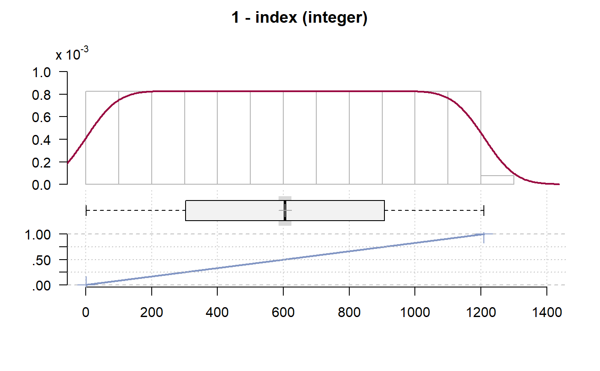#> ------------------------------------------------------------------------------ #> 2 - date (Date) #> #> length n NAs unique #> 1'209 1'177 32 31 #> 97.4% 2.6% #> #> lowest : 2014-03-01 (42), 2014-03-02 (46), 2014-03-03 (26), 2014-03-04 (19) #> highest: 2014-03-28 (46), 2014-03-29 (53), 2014-03-30 (43), 2014-03-31 (34) #> #> #> Weekday: #> #> Pearson's Chi-squared test (1-dim uniform): #> X-squared = 78.879, df = 6, p-value = 6.09e-15 #> #> level freq perc cumfreq cumperc #> 1 Monday 144 12.2% 144 12.2% #> 2 Tuesday 117 9.9% 261 22.2% #> 3 Wednesday 134 11.4% 395 33.6% #> 4 Thursday 147 12.5% 542 46.0% #> 5 Friday 171 14.5% 713 60.6% #> 6 Saturday 244 20.7% 957 81.3% #> 7 Sunday 220 18.7% 1'177 100.0% #> #> Months: #> #> Pearson's Chi-squared test (1-dim uniform): #> X-squared = 12947, df = 11, p-value < 2.2e-16 #> #> level freq perc cumfreq cumperc #> 1 January 0 0.0% 0 0.0% #> 2 February 0 0.0% 0 0.0% #> 3 March 1'177 100.0% 1'177 100.0% #> 4 April 0 0.0% 1'177 100.0% #> 5 May 0 0.0% 1'177 100.0% #> 6 June 0 0.0% 1'177 100.0% #> 7 July 0 0.0% 1'177 100.0% #> 8 August 0 0.0% 1'177 100.0% #> 9 September 0 0.0% 1'177 100.0% #> 10 October 0 0.0% 1'177 100.0% #> 11 November 0 0.0% 1'177 100.0% #> 12 December 0 0.0% 1'177 100.0% #> #> By days : #> #> level freq perc cumfreq cumperc #> 1 2014-03-01 42 3.6% 42 3.6% #> 2 2014-03-02 46 3.9% 88 7.5% #> 3 2014-03-03 26 2.2% 114 9.7% #> 4 2014-03-04 19 1.6% 133 11.3% #> 5 2014-03-05 33 2.8% 166 14.1% #> 6 2014-03-06 39 3.3% 205 17.4% #> 7 2014-03-07 44 3.7% 249 21.2% #> 8 2014-03-08 55 4.7% 304 25.8% #> 9 2014-03-09 42 3.6% 346 29.4% #> 10 2014-03-10 26 2.2% 372 31.6% #> 11 2014-03-11 34 2.9% 406 34.5% #> 12 2014-03-12 36 3.1% 442 37.6% #> 13 2014-03-13 35 3.0% 477 40.5% #> 14 2014-03-14 38 3.2% 515 43.8% #> 15 2014-03-15 48 4.1% 563 47.8% #> 16 2014-03-16 47 4.0% 610 51.8% #> 17 2014-03-17 30 2.5% 640 54.4% #> 18 2014-03-18 32 2.7% 672 57.1% #> 19 2014-03-19 31 2.6% 703 59.7% #> 20 2014-03-20 36 3.1% 739 62.8% #> 21 2014-03-21 43 3.7% 782 66.4% #> 22 2014-03-22 46 3.9% 828 70.3% #> 23 2014-03-23 42 3.6% 870 73.9% #> 24 2014-03-24 28 2.4% 898 76.3% #> 25 2014-03-25 32 2.7% 930 79.0% #> 26 2014-03-26 34 2.9% 964 81.9% #> 27 2014-03-27 37 3.1% 1'001 85.0% #> 28 2014-03-28 46 3.9% 1'047 89.0% #> 29 2014-03-29 53 4.5% 1'100 93.5% #> 30 2014-03-30 43 3.7% 1'143 97.1% #> 31 2014-03-31 34 2.9% 1'177 100.0% #>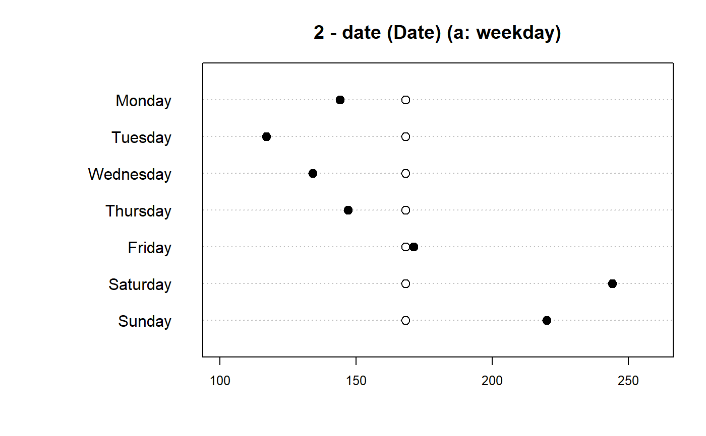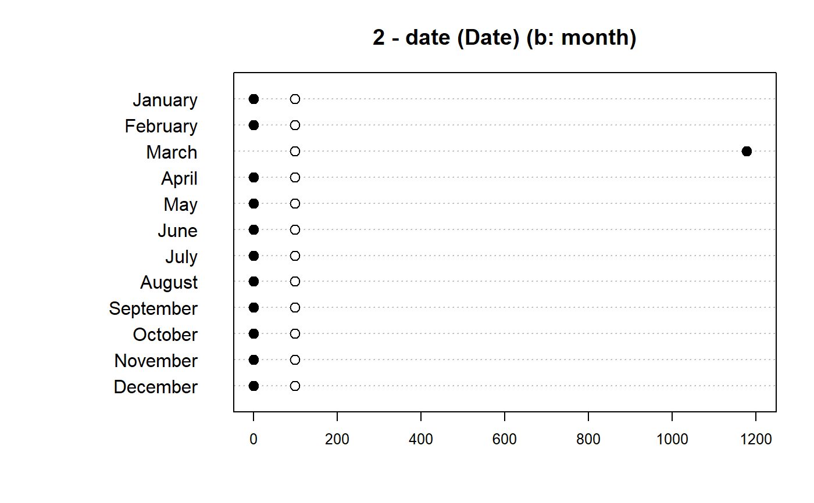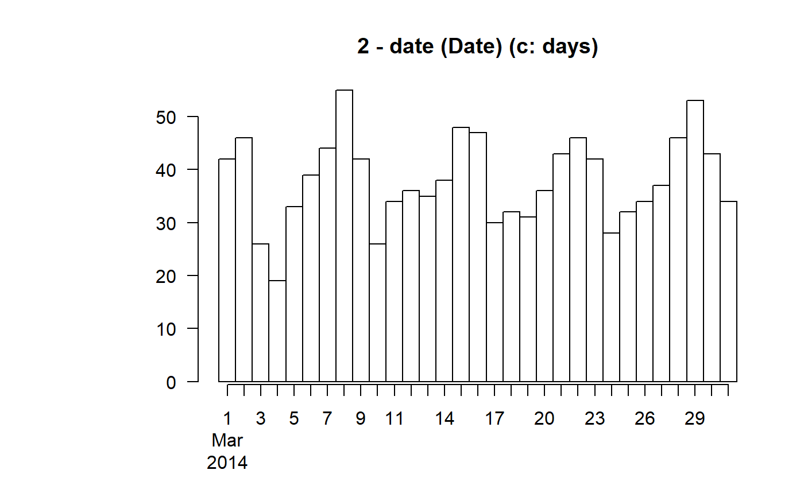#> ------------------------------------------------------------------------------ #> 3 - week (numeric) #> #> length n NAs unique 0s mean meanCI #> 1'209 1'177 32 6 0 11.40 11.33 #> 97.4% 2.6% 0.0% 11.48 #> #> .05 .10 .25 median .75 .90 .95 #> 9.00 10.00 10.00 11.00 13.00 13.00 13.00 #> #> range sd vcoef mad IQR skew kurt #> 5.00 1.33 0.12 1.48 3.00 -0.07 -1.01 #> #> #> level freq perc cumfreq cumperc #> 1 9 88 7.5% 88 7.5% #> 2 10 258 21.9% 346 29.4% #> 3 11 264 22.4% 610 51.8% #> 4 12 260 22.1% 870 73.9% #> 5 13 273 23.2% 1'143 97.1% #> 6 14 34 2.9% 1'177 100.0% #>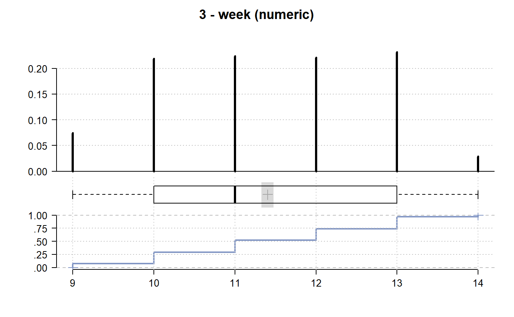#> ------------------------------------------------------------------------------ #> 4 - weekday (numeric) #> #> length n NAs unique 0s mean meanCI #> 1'209 1'177 32 7 0 4.44 4.33 #> 97.4% 2.6% 0.0% 4.56 #> #> .05 .10 .25 median .75 .90 .95 #> 1.00 1.00 3.00 5.00 6.00 7.00 7.00 #> #> range sd vcoef mad IQR skew kurt #> 6.00 2.02 0.45 2.97 3.00 -0.34 -1.17 #> #> #> level freq perc cumfreq cumperc #> 1 1 144 12.2% 144 12.2% #> 2 2 117 9.9% 261 22.2% #> 3 3 134 11.4% 395 33.6% #> 4 4 147 12.5% 542 46.0% #> 5 5 171 14.5% 713 60.6% #> 6 6 244 20.7% 957 81.3% #> 7 7 220 18.7% 1'177 100.0% #>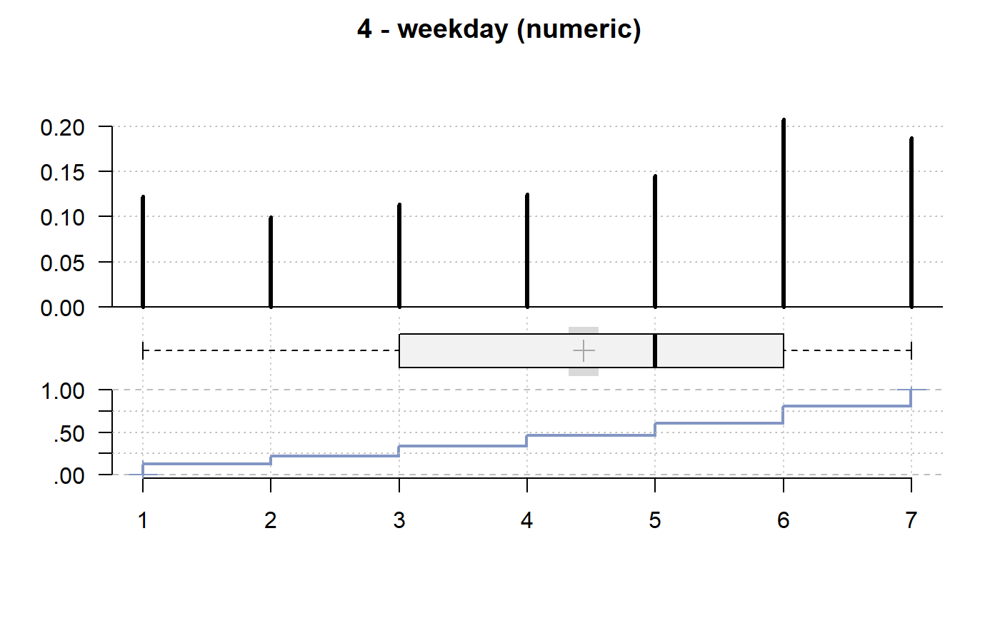#> ------------------------------------------------------------------------------ #> 5 - area (factor) #> #> length n NAs unique levels dupes #> 1'209 1'199 10 3 3 y #> 99.2% 0.8% #> #> level freq perc cumfreq cumperc #> 1 Brent 474 39.5% 474 39.5% #> 2 Westminster 381 31.8% 855 71.3% #> 3 Camden 344 28.7% 1'199 100.0% #>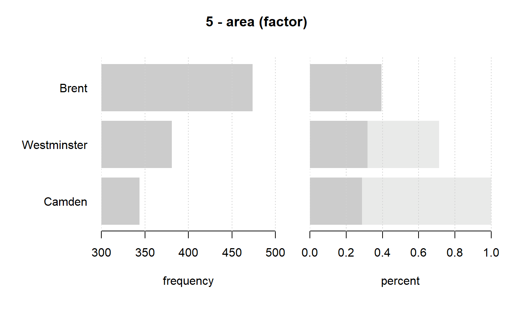#> ------------------------------------------------------------------------------ #> 6 - count (integer) #> #> length n NAs unique 0s mean meanCI #> 1'209 1'197 12 8 0 3.44 3.36 #> 99.0% 1.0% 0.0% 3.53 #> #> .05 .10 .25 median .75 .90 .95 #> 1.00 2.00 2.00 3.00 4.00 6.00 6.00 #> #> range sd vcoef mad IQR skew kurt #> 7.00 1.56 0.45 1.48 2.00 0.45 -0.36 #> #> #> level freq perc cumfreq cumperc #> 1 1 108 9.0% 108 9.0% #> 2 2 259 21.6% 367 30.7% #> 3 3 300 25.1% 667 55.7% #> 4 4 240 20.1% 907 75.8% #> 5 5 152 12.7% 1'059 88.5% #> 6 6 97 8.1% 1'156 96.6% #> 7 7 34 2.8% 1'190 99.4% #> 8 8 7 0.6% 1'197 100.0% #>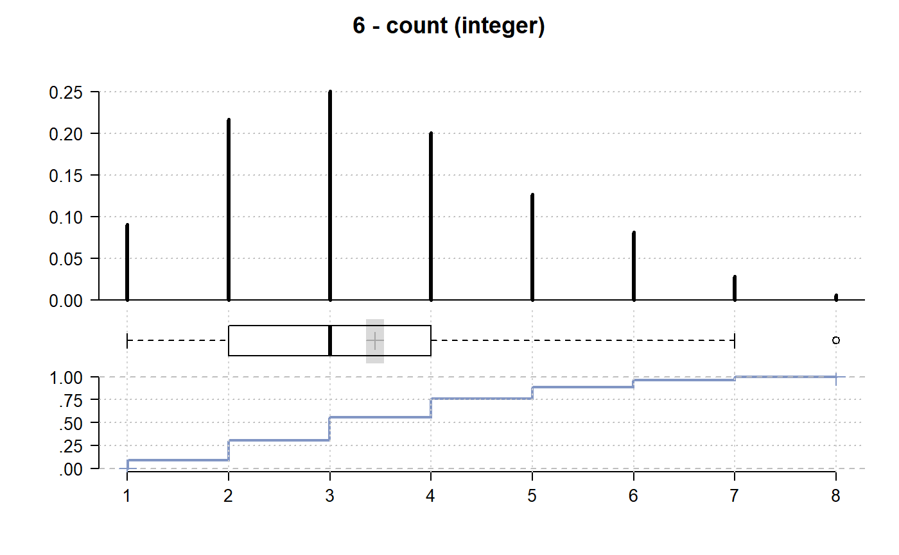#> ------------------------------------------------------------------------------ #> 7 - rabate (logical - dichotomous) #> #> length n NAs unique #> 1'209 1'197 12 2 #> 99.0% 1.0% #> #> freq perc lci.95 uci.95' #> FALSE 601 50.2% 47.4% 53.0% #> TRUE 596 49.8% 47.0% 52.6% #> #> ' 95%-CI Wilson #>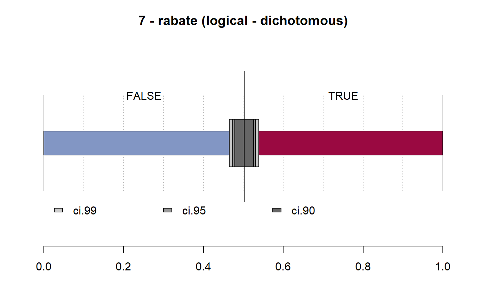#> ------------------------------------------------------------------------------ #> 8 - price (numeric) #> #> length n NAs unique 0s mean meanCI #> 1'209 1'197 12 360 0 48.7289 47.5022 #> 99.0% 1.0% 0.0% 49.9556 #> #> .05 .10 .25 median .75 .90 .95 #> 13.9900 23.9800 30.9800 46.7640 63.1800 78.8328 87.1200 #> #> range sd vcoef mad IQR skew kurt #> 125.5420 21.6313 0.4439 23.4014 32.2000 0.4971 0.1076 #> #> lowest : 8.792 (3), 9.592, 10.392 (2), 10.99 (11), 11.192 (2) #> highest: 116.532, 123.39, 124.434, 129.546, 134.334 #>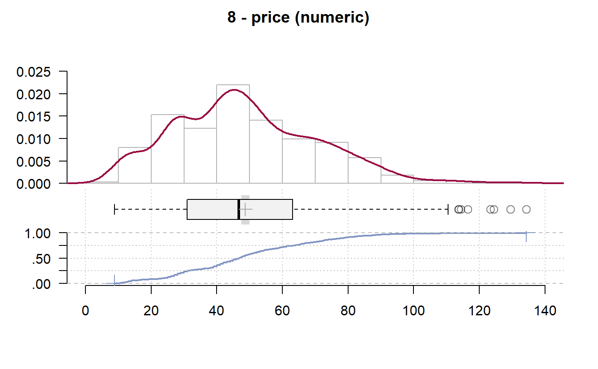#> ------------------------------------------------------------------------------ #> 9 - operator (factor) #> #> length n NAs unique levels dupes #> 1'209 1'201 8 3 3 y #> 99.3% 0.7% #> #> level freq perc cumfreq cumperc #> 1 Rhonda 446 37.1% 446 37.1% #> 2 Maria 388 32.3% 834 69.4% #> 3 Allanah 367 30.6% 1'201 100.0% #>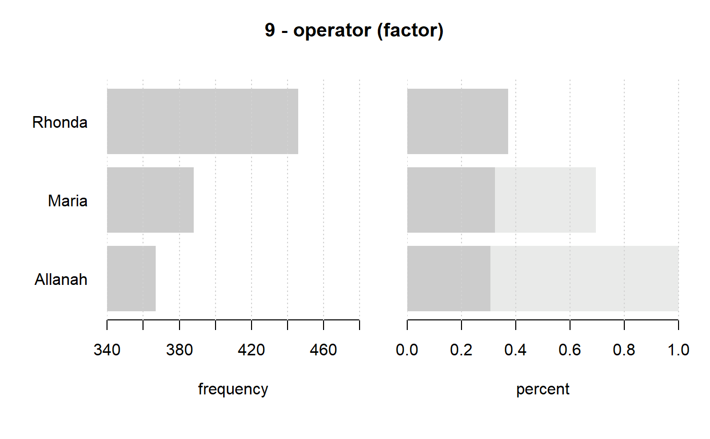#> ------------------------------------------------------------------------------ #> 10 - driver (factor) #> #> length n NAs unique levels dupes #> 1'209 1'204 5 7 7 y #> 99.6% 0.4% #> #> level freq perc cumfreq cumperc #> 1 Carpenter 272 22.6% 272 22.6% #> 2 Carter 234 19.4% 506 42.0% #> 3 Taylor 204 16.9% 710 59.0% #> 4 Hunter 156 13.0% 866 71.9% #> 5 Miller 125 10.4% 991 82.3% #> 6 Farmer 117 9.7% 1'108 92.0% #> 7 Butcher 96 8.0% 1'204 100.0% #>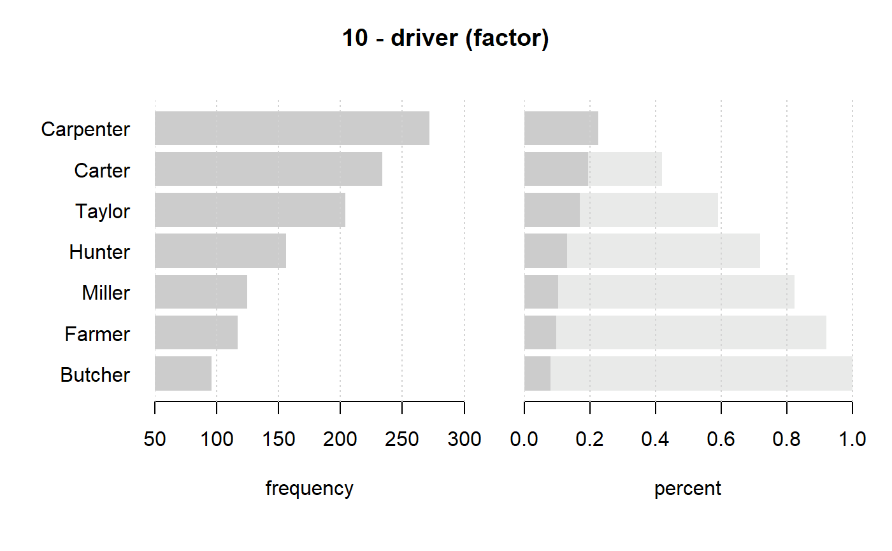#> ------------------------------------------------------------------------------ #> 11 - delivery_min (numeric) #> #> length n NAs unique 0s mean meanCI #> 1'209 1'209 0 384 0 25.65 25.04 #> 100.0% 0.0% 0.0% 26.26 #> #> .05 .10 .25 median .75 .90 .95 #> 10.40 11.60 17.40 24.40 32.50 40.42 45.20 #> #> range sd vcoef mad IQR skew kurt #> 56.80 10.84 0.42 11.27 15.10 0.61 0.10 #> #> lowest : 8.8 (3), 8.9, 9.0 (3), 9.1 (5), 9.2 (3) #> highest: 61.9, 62.7, 62.9, 63.2, 65.6 #>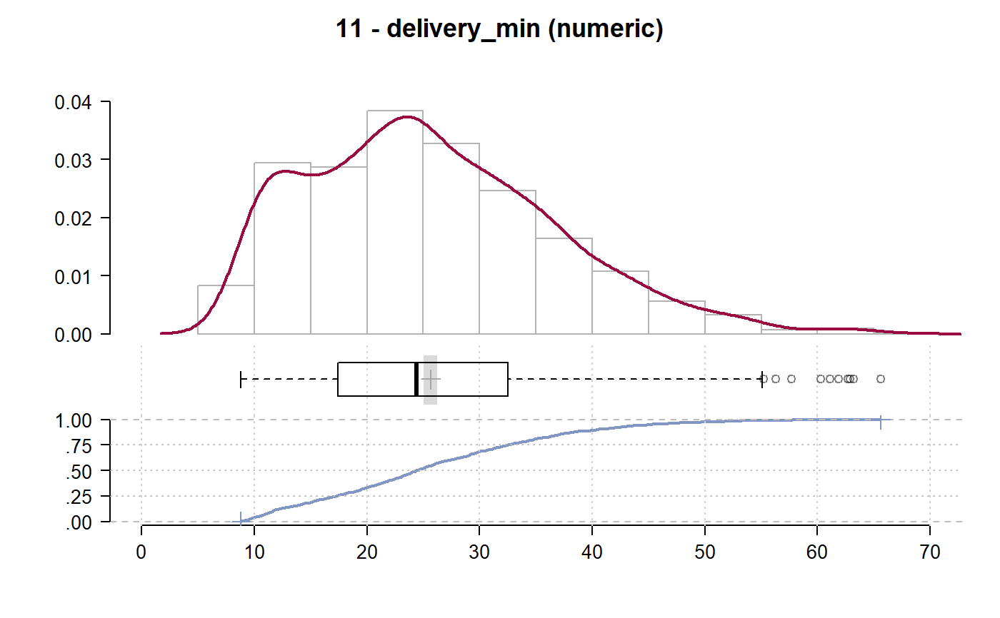#> ------------------------------------------------------------------------------ #> 12 - temperature (numeric) #> #> length n NAs unique 0s mean meanCI #> 1'209 1'170 39 375 0 47.937 47.367 #> 96.8% 3.2% 0.0% 48.507 #> #> .05 .10 .25 median .75 .90 .95 #> 26.700 33.290 42.225 50.000 55.300 58.800 60.500 #> #> range sd vcoef mad IQR skew kurt #> 45.500 9.938 0.207 9.192 13.075 -0.842 0.051 #> #> lowest : 19.3, 19.4, 20.0, 20.2 (2), 20.35 #> highest: 63.8, 64.1, 64.6, 64.7, 64.8 #>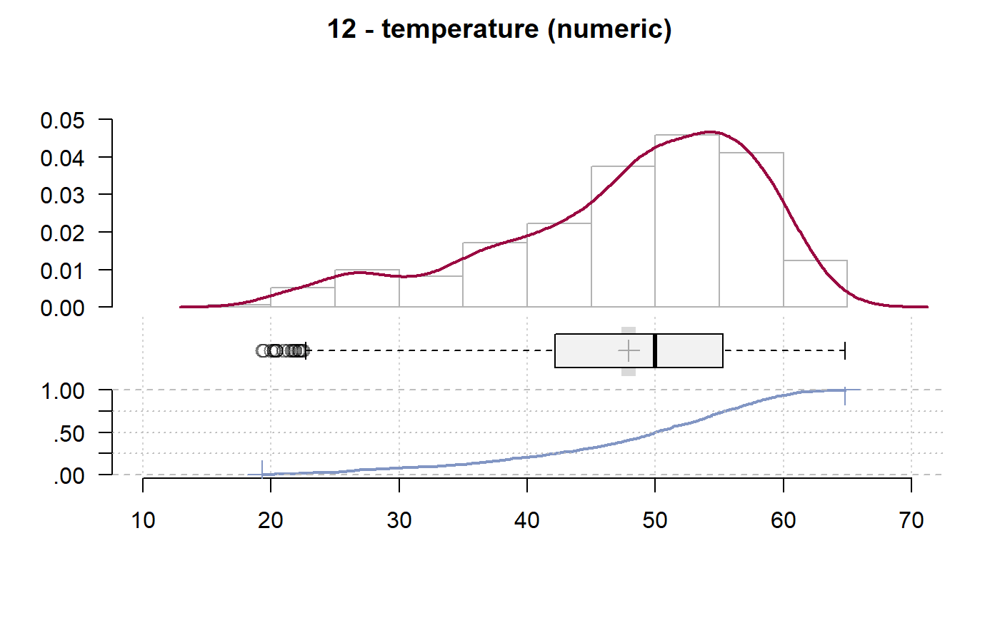#> ------------------------------------------------------------------------------ #> 13 - wine_ordered (integer - dichotomous) #> #> length n NAs unique #> 1'209 1'197 12 2 #> 99.0% 1.0% #> #> freq perc lci.95 uci.95' #> 0 1'010 84.4% 82.2% 86.3% #> 1 187 15.6% 13.7% 17.8% #> #> ' 95%-CI Wilson #>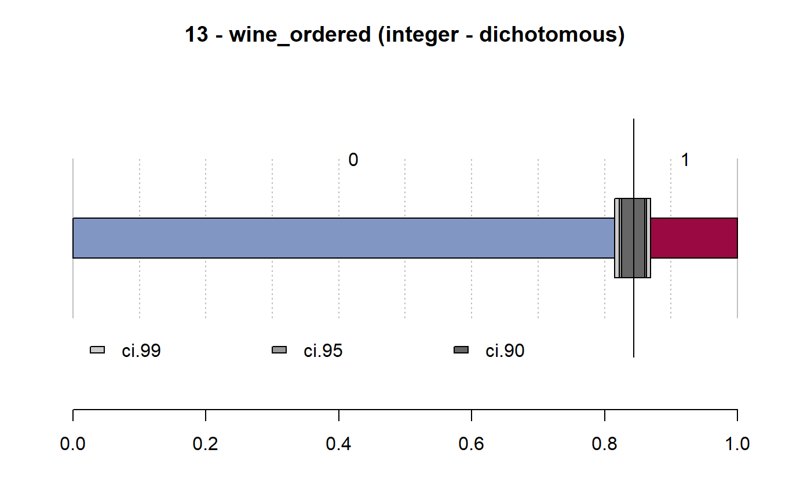#> ------------------------------------------------------------------------------ #> 14 - wine_delivered (integer - dichotomous) #> #> length n NAs unique #> 1'209 1'197 12 2 #> 99.0% 1.0% #> #> freq perc lci.95 uci.95' #> 0 1'034 86.4% 84.3% 88.2% #> 1 163 13.6% 11.8% 15.7% #> #> ' 95%-CI Wilson #>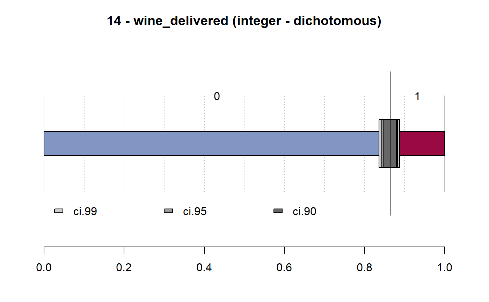#> ------------------------------------------------------------------------------ #> 15 - wrongpizza (logical - dichotomous) #> #> length n NAs unique #> 1'209 1'205 4 2 #> 99.7% 0.3% #> #> freq perc lci.95 uci.95' #> FALSE 1'122 93.1% 91.5% 94.4% #> TRUE 83 6.9% 5.6% 8.5% #> #> ' 95%-CI Wilson #>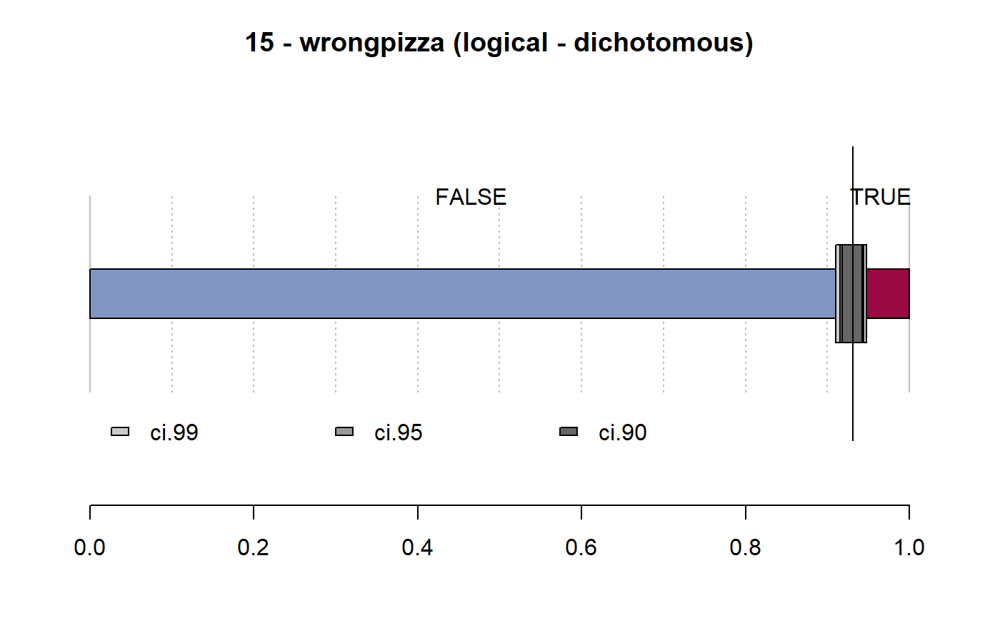#> ------------------------------------------------------------------------------ #> 16 - quality (ordered, factor) #> #> length n NAs unique levels dupes #> 1'209 1'008 201 3 3 y #> 83.4% 16.6% #> #> level freq perc cumfreq cumperc #> 1 low 156 15.5% 156 15.5% #> 2 medium 356 35.3% 512 50.8% #> 3 high 496 49.2% 1'008 100.0% #>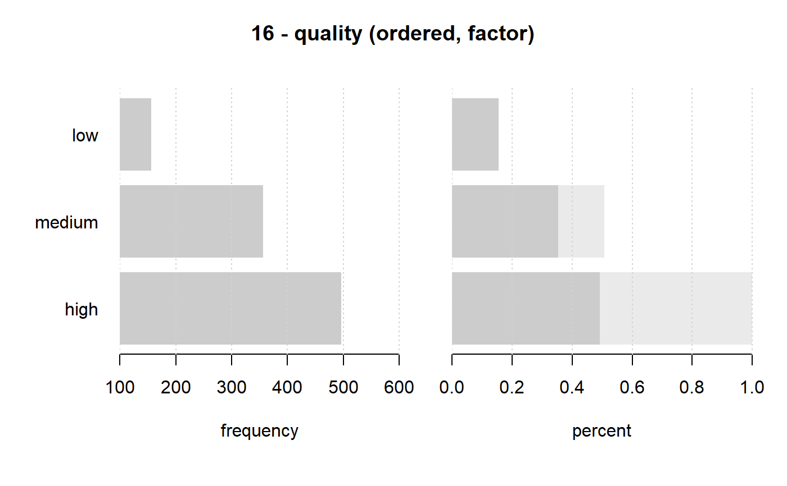